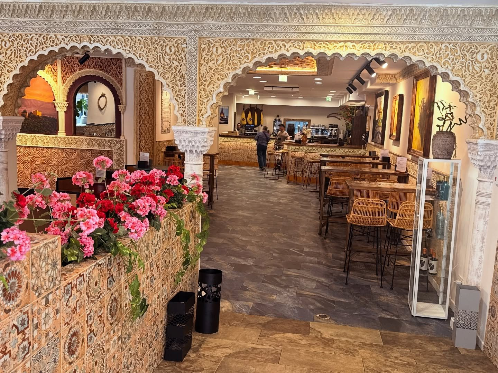

Reservas
Reserve su mesa
Reserva en línea con confirmación inmediata, por WhatsApp o por teléfono. Para grupos y para el menú degustación, conviene avisar con antelación.
Grupos, menú degustación y celebraciones
¿Vienen en grupo
o buscan algo especial?
La reserva en línea está pensada para las mesas del día a día. Si vienen en grupo, quieren el menú degustación para toda la mesa o están organizando una celebración, escríbanos y lo preparamos a medida.
- Menús cerrados adaptados al grupo
- La Bodega como sala independiente
- Posibilidad de cerrar la velada con flamenco
Demostración: este formulario de consulta valida los datos y prepara el mensaje, pero todavía no envía nada a un servidor. La reserva de mesa de arriba sí es el sistema real del restaurante.
Solicitud preparada
Esta demostración no envía todavía los datos a ningún servidor: al conectarla, la solicitud llegará al correo del restaurante. Mientras tanto, puede enviarnos la misma información por WhatsApp con un solo toque.